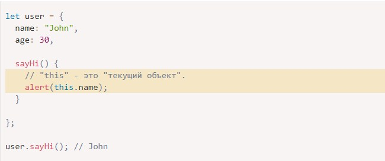
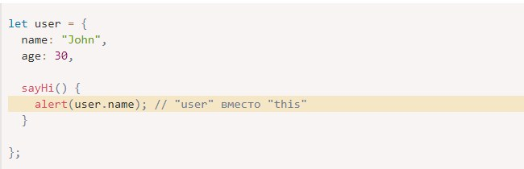
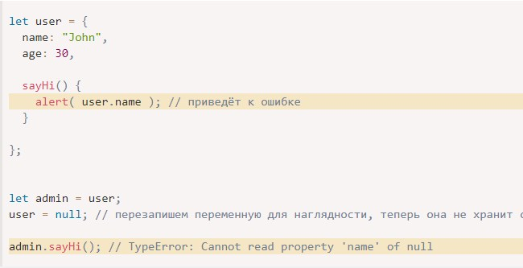

Как правило, методу объекта обычно требуется доступ к информации, хранящейся в объекте, для выполнения своей работы
Например, коду внутри user.sayHi() может потребоваться имя пользователя, которое хранится в объекте user.
Для доступа к информации внутри объекта метод может использовать ключевое слово this.
Значение this – это объект «перед точкой», который используется для вызова метода.

Здесь во время выполнения кода user.sayHi() значением this будет являться user (ссылка на объект user).
Технически также возможно получить доступ к объекту без ключевого слова this, обратившись к нему через внешнюю переменную (в которой хранится ссылка на этот объект):

Но такой код ненадёжен. Если мы решим скопировать ссылку на объект user в другую переменную, например, admin = user, и перезапишем переменную user чем-то другим, тогда будет осуществлён доступ к неправильному объекту при вызове метода из admin

Если бы мы использовали this.name вместо user.name внутри alert, тогда этот код бы сработал.